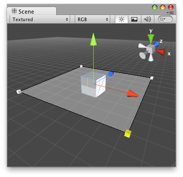

Handles.DrawSolidRectangleWithOutline
Parameters
| verts | The 4 vertices of the rectangle in world coordinates. | |
| faceColor | The color of the rectangle's face. | |
| outlineColor | The outline color of the rectangle. |
Description 描述
Draw a solid outlined rectangle in 3D space.

Solid rectangle with a black outline in the Scene View.
// Create a semi transparent rectangle that lets you modify // the "range" that resides in "SolidRectangleExample.cs"
using UnityEngine; using UnityEditor;
[CustomEditor(typeof(SolidRectangleExample))] public class DrawSolidRectangle : Editor { void OnSceneGUI() { SolidRectangleExample t = target as SolidRectangleExample; Vector3 pos = t.transform.position;
Vector3[] verts = new Vector3[] { new Vector3(pos.x - t.range, pos.y, pos.z - t.range), new Vector3(pos.x - t.range, pos.y, pos.z + t.range), new Vector3(pos.x + t.range, pos.y, pos.z + t.range), new Vector3(pos.x + t.range, pos.y, pos.z - t.range) };
Handles.DrawSolidRectangleWithOutline(verts, new Color(0.5f, 0.5f, 0.5f, 0.1f), new Color(0, 0, 0, 1));
foreach (Vector3 posCube in verts) { t.range = Handles.ScaleValueHandle(t.range, posCube, Quaternion.identity, 1.0f, Handles.CubeHandleCap, 1.0f); } } }
And the script attached to this Handle:
using UnityEngine;
public class SolidRectangleExample : MonoBehaviour { public float range = 5.0f; }